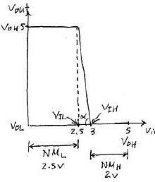
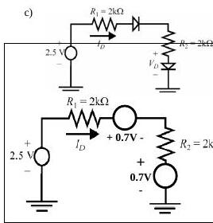
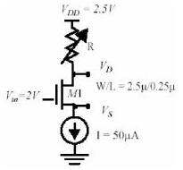
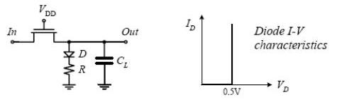
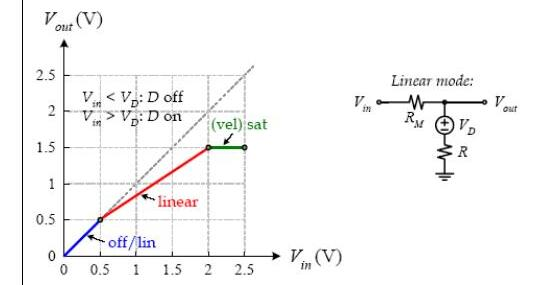

· EEM312
EEM312 Digital Electronics: Midterm Exams and Solutions (2007–2010)
EEM312 – Sayısal Elektronik · 09.04.2007 · 16.10.2026
This post collects the 2007, 2008, 2009 and 2010 midterm exams of the Başkent University course EEM312 Digital Electronics (Prof. Dr. Emin Akata), together with their solutions. Questions identical to those of earlier years are only briefly noted; the 2003–2006 midterms are in a separate archive post. The original Word files can be downloaded as a ZIP at the end of the post.
2007 – Midterm 1 (09.04.2007)
Question 1 (30 pts)
- a) In a junction where the n region is doped 10 times more heavily than the p region, the depletion region is 10 times wider on the more lightly doped p side.
- b) Regenerative gate: if the gain in the transition region is greater than 1 (VTC slope steeper than 45°), a signal that deviates from the nominal value returns to the nominal value after a few stages.
- c) Die yield = [1 + (defects per unit area × die area)/α]^(−α); die cost = wafer cost / (dies per wafer × die yield).
- d) Channel length modulation: in saturation, as V_DS increases the effective channel gets shorter and I_D increases slightly; this can be seen from the slight slope of the curves in saturation.
- e) Variation of t_pLH, t_pHL and t_p with β = (W/L)_p/(W/L)_n: as β increases, t_pLH decreases and t_pHL increases; the minimum of t_p occurs at a β slightly smaller than the point where t_pHL = t_pLH.
- f) Pros and cons of a low supply voltage: energy decreases quadratically and gain increases up to a certain level; as the supply approaches ~4kT/q the gate breaks down, performance degrades, and sensitivity to external noise and V_T variations increases.
Question 2 (24 pts): Load capacitances
An inverter drives 10 identical inverters:
| W/L | AD (µm²) | AS (µm²) | PD (µm) | PS (µm) | CJ (fF/µm²) | CJSW (fF/µm) | Cgdo (fF/µm) | Cgso (fF/µm) | Cox (fF/µm²) | Keq | |
|---|---|---|---|---|---|---|---|---|---|---|---|
| NMOS | 1.2/0.25 | 1.2 | 1.2 | 3.2 | 3.2 | 2 | 0.2 | 0.4 | 0.4 | 5 | 0.6 |
| PMOS | 3.2/0.25 | 3.2 | 3.2 | 5.2 | 5.2 | 1.5 | 0.25 | 0.3 | 0.3 | 5 | 0.5 |
| Capacitance | Expression | Value |
|---|---|---|
| C_pmos,drain | K_eqp AD_p CJ_p + K_eqp PD_p CJSW_p | 3.05 fF |
| C_pmos,gate | 10 × [(Cgdo_p + Cgso_p) W_p + C_ox W_p L_p] | 59.2 fF |
| C_pmos,gate-drain | 2 × Cgdo_p W_p | 1.92 fF |
| C_nmos,drain | K_eqn AD_n CJ_n + K_eqn PD_n CJSW_n | 1.82 fF |
| C_nmos,gate | 10 × [(Cgdo_n + Cgso_n) W_n + C_ox W_n L_n] | 24.6 fF |
| C_nmos,gate-drain | 2 × Cgdo_n W_n | 0.96 fF |
Question 3 (23 pts)
a) An inverter with V_DD = 5 V, V_OH = 5 V, V_OL = 0 V and transition-region gain g = 10 can receive at most 2.5 V of noise on its ground line. What are the most suitable NM_L and NM_H?

Answer: Since there is 2.5 V of noise on the ground, V_IL must not be below 2.5 V. g = 10 = (V_OH − V_OL)/(V_IH − V_IL) = 5/0.5 ⇒ V_IH − V_IL = 0.5 V, V_IH = 3 V. Thus NM_H = V_OH − V_IH = 2 V, NM_L = V_IL − V_OL = 2.5 V; these are the values at which NM_L and NM_H can be closest to each other.
b) Identical to the 1.6 kΩ NMOS circuit in the 2005 midterm (answer: linear region, V_DS = 2.3 V, I_D = 1.06 mA).
Question 4 (23 pts): Which transistor is which type?
Measurements for two long-channel MOSFETs (W/L = 2.4 µm/1.2 µm, V_SB = 0):
| Condition | MOSFET-A current (magnitude) | MOSFET-B current (magnitude) |
|---|---|---|
| V_GS = 0, V_DS = 0 | 0 | 0 |
| V_GS = −1 V, V_DS = −2 V | 20 µA | 0 |
| V_GS = 1 V, V_DS = 1 V | 0 | 45 µA |
| V_GS = 1 V, V_DS = 0.02 V | 0 | 4 µA |
| V_GS = −2 V, V_DS = −2 V | 200 µA | 0 |
Answer: A, which conducts at negative V_GS and V_DS, is a PMOS; B, which conducts at positive voltages, is an NMOS.
- PMOS (A): measurements 2 and 5 are in saturation; I_D = ½ k_p (V_GS − V_T)². Ratio: 10 = (−2 − V_T)²/(−1 − V_T)² ⇒ (−2 − V_T)/(−1 − V_T) = 3.16 ⇒ V_Tp = −0.537 V. −20 × 10⁻⁶ = ½ k_p (−0.463)² ⇒ k_p = −187 × 10⁻⁶ ⇒ k′_p = k_p/(W/L) = −93.5 × 10⁻⁶ A/V².
- NMOS (B): measurement 3 is in saturation (45 µA = ½ k_n (1 − V_T)²), measurement 4 (V_DS = 0.02 V) is in the linear region (4 µA ≈ 0.02 k_n (1 − V_T)). Ratio: 45/4 = 25 (1 − V_T) ⇒ V_Tn = 0.55 V; k_n = 444.4 × 10⁻⁶ ⇒ k′_n = 222.2 × 10⁻⁶ A/V².
Note: In the solution, W/L is written as "(2.4)/(1.4)" when computing k′; the given W/L = 2.4/1.2 = 2, and the results (−93.5 and 222.2 µA/V²) were also obtained with W/L = 2.
(Points: Question 1 30 pts, Question 2 24 pts, Question 3 23 pts, Question 4 23 pts.)
2008 – Midterm (09.04.2008)
Question 1 (30 pts)
- a) If the drain and source pins of the PMOS in the socket are inserted the wrong way round, nothing changes; the two regions are physically identical.
- b) A MOS transistor in saturation behaves like an ideal current source; in practice, because of channel length modulation, I_D = I_D′(1 + λV_DS).
- c) DIBL (Drain Induced Barrier Lowering): Increasing V_DS widens the depletion region of the drain junction and assists the depletion region expected to form under the gate. Strong inversion forms at a smaller voltage, that is, V_T decreases. This V_DS-dependent threshold voltage is a kind of voltage-dependent noise; for example, it can cause problems in memory chips, where the data pattern (and therefore the voltage) changes.
- d) A 7-inverter ring oscillator at 2.38 GHz: t_p = 1/(2fN) = 30 ps.
- e) NM_H, NM_L, V_OL, V_OH, V_IL, V_IH, V_sw and the undefined region are shown on a line between V_DD and GND: between V_OH and V_IH is NM_H, between V_IL and V_OL is NM_L, between V_IH and V_IL is the undefined region, and between V_OH and V_OL is V_sw.
- f) In the I_D–V_DS plot, under velocity saturation the V_GS curves are equally spaced (I_D is linear in V_GS); in saturation the spacing grows quadratically with V_GS.
Question 2 (20 pts)
- a) In a reverse-biased junction, the terminal current is 10 nA and the drift current is 15 nA ⇒ diffusion current I_D = I_S − I = 5 nA; if the temperature increases, I_S and the terminal current increase.
- b) Minority-carrier distribution in a forward-biased junction: the bias lowers the barrier; holes diffuse into n and electrons into p, where they become minority carriers and travel until they recombine. The density is highest right at the edge of the depletion region (p_n(W₂), n_p(−W₁)) and decays exponentially from there to the thermal-equilibrium value (p_n0, n_p0).
- c) Find I_D using the simple diode model; write the equation for an accurate solution (V_D-on = 0.7 V).

Answer: I_D = (V_in − 2V_D-on)/(R1 + R2) = (2.5 − 2 × 0.7)/(2k + 2k) = 275 µA. For the accurate solution, the ideal diode equation: I_D = (V_in − 2V_D)/(R1 + R2) = I_S (e^(V_D/nφ_T) − 1); it is solved iteratively starting from V_D = 0.7 V (I_S, φ_T and n must be known).
Question 3 (20 pts): Parameter extraction from a short-channel NMOS
| V_GS (V) | V_DS (V) | V_BS (V) | I_D (µA) | |
|---|---|---|---|---|
| 1 | 2.5 | 1.8 | 0 | 1812 |
| 2 | 2 | 1.8 | 0 | 1297 |
| 3 | 2 | 2.5 | 0 | 1361 |
| 4 | 2 | 1.8 | −1 | 1146 |
| 5 | 2 | 1.8 | −2 | 1039 |
V_DSAT = 0.6 V, k′ = 100 µA/V². What are V_T0, λ, γ, 2|φ_F| and W/L?
Answer: For (normal) saturation in any of the measurements, 2 − V_T < 0.6, i.e. V_T > 1.4 V, would be required; since this is too large, all measurements are assumed to be in velocity saturation: I_D = k′(W/L) V_DSAT (V_GS − V_T − V_DSAT/2)(1 + λV_DS).
- Ratio 1/2: 1812/1297 = (2.5 − V_T0 − 0.3)/(2 − V_T0 − 0.3) ⇒ V_T0 = 0.44 V (< 1.4 V, the assumption is consistent).
- Ratio 2/3: 1297/1361 = (1 + 1.8λ)/(1 + 2.5λ) ⇒ λ = 0.08 V⁻¹.
- From the 2/4 and 2/5 ratios, V_T4 = 0.587 V, V_T5 = 0.691 V. 0.587 = 0.44 + γ(√(|2φ_F| + 1) − √|2φ_F|) and 0.691 = 0.44 + γ(√(|2φ_F| + 2) − √|2φ_F|); their ratio is 1.7 ⇒ by iteration |2φ_F| = 0.6 V, γ = 0.29 V^½.
- From measurement 2: 1297 = 100 (W/L) 0.6 (2 − 0.44 − 0.3)(1 + 0.08 × 1.8) ⇒ W/L = 15.
Question 4 (14 pts): Test circuit

k′ = 110 µA/V², V_T = 0.4 V, V_DSAT = 0.6 V.
- a) R = 10 kΩ: V_D = 2.5 − 10k × 50 µA = 2 V. Assuming saturation, 50 × 10⁻⁶ = (110 × 10⁻⁶/2)(2.5/0.25)(2 − V_S − 0.4)² ⇒ V_S = 1.3 V. V_GS − V_T = 0.3 V < V_DSAT < V_DS = 0.7 V ⇒ saturation, the assumption is correct.
- b) R = 30 kΩ: V_D = 2.5 − 1.5 = 1 V. The saturation assumption gives V_DS = 1 − 1.3 = −0.3 V, which is impossible. Assuming the linear region, 50 × 10⁻⁶ = 110 × 10⁻⁶ × 10 × (1 − V_S)[(2 − V_S − 0.4) − (1 − V_S)/2] ⇒ V_S = 0.93 V; V_GS − V_T = 0.67 V, V_DS = 0.07 V ⇒ V_DS < V_DSAT, V_GS − V_T: linear region.
Question 5 (16 pts): V_M = V_DD/2
V_DD = 5 V, k′_n = 40 µA/V², k′_p = 20 µA/V², L_n = L_p = 0.5 µm, W_n = 2 µm, V_T0n = −V_T0p = 1 V; no velocity saturation.
- a) At V_M both transistors are in saturation: (k_n/2)(V_M − V_T0n)² = (k_p/2)(V_M − V_DD − V_T0p)². Substituting V_M = V_DD/2 and V_T0p = −V_T0n gives k_p/k_n = 1.
- b) k_p/k_n = (µ_p W_p)/(µ_n W_n) = 1 ⇒ W_p = (µ_n/µ_p) W_n = (40/20) × 2 µm = 4 µm.
(Points: Question 1 30 pts, Question 2 20 pts, Question 3 20 pts, Question 4 14 pts, Question 5 16 pts; duration 100 min.)
2009 – Midterm (10.04.2009)
Question 1
- a) The four main reasons for preferring CMOS (identical to the answer in the 2003 exam): large V_sw, low output impedance, very high input impedance, and no static power consumption.
- b) A temperature change affects a reverse-biased diode more.
- c) In a p-n junction there is an excess of electrons on the n side and an excess of holes on the p side; the density difference gives rise to a diffusion current from p to n. The accumulated charges create an electric field directed from n to p, and this field produces an opposing drift current. Forward bias favors the diffusion current (I_D), and reverse bias favors the drift current (I_S).
- d) Variation of the gate-channel capacitance with V_GS (V_DS = 0): when there is no channel, the entire capacitance (WLC_ox) is between gate and body; as V_GS approaches V_T, a depletion region forms and the capacitance drops. At V_GS = V_T the channel forms, C_GCB goes to zero, and the capacitance is shared equally between gate–drain and gate–source (C_GCS = C_GCD = WLC_ox/2). As saturation is approached, the channel pinches off at the drain end, C_GCD drops to zero, and the capacitance appears entirely between gate and source as C_GC = C_GCS = (2/3)WLC_ox.
- e) Transistor regions along the VTC of a CMOS inverter: at V_in = 0 the NMOS is in cutoff and the PMOS is conducting, and since V_DSp ≈ 0 it is in the linear region. As V_in increases and the NMOS turns on, V_DSn ≈ V_DD, so the NMOS is in saturation. At V_M (V_in = V_out) both transistors are in saturation; on the other half of the curve the roles are reversed.
Note: In the answer to 1d, the saturation capacitance is written as "C_GC = C_GCS = 2WLC_ox/2"; the known result is (2/3)WLC_ox.
Question 2: Process selection and cost
| 65 nm CMOS | 90 nm CMOS | |
|---|---|---|
| Mask set cost | $3,000,000 | $800,000 |
| Die size | 1.5 cm² | 2 cm² |
| Wafer size | 30 cm | 20 cm |
| Die yield | 78% | 85% |
| Wafer cost | $2,000 | $1,200 |
| Test cost | $0.68/die | $0.68/die |
| Packaging | $0.40/chip | $0.40/chip |
| Final test yield | 95% | 95% |
500,000 units are expected to be sold; which process is more economical?
Answer: Dies per wafer = π (diameter/2)² / die area − π × diameter / √(2 × die area).
- 65 nm: 3.14 × 15² / 1.5 − 3.14 × 30 / √3 ≈ 416 dies; die cost = 2000 / (416 × 0.78) = $6.16; variable cost = (6.16 + 0.68 + 0.40) / 0.95 = $7.62; cost per IC = 7.62 + 3,000,000/500,000 = $13.62.
- 90 nm: 125 dies; die cost $11.29; variable cost $13.02; cost per IC = 13.02 + 1.6 = $14.62.
For 500,000 units, the 65 nm process is more suitable.
Question 3: V_T0, λ, k′ and V_DSAT from measurements
| Experiment | V_GS | V_DS | V_BS | I_D | Region |
|---|---|---|---|---|---|
| 1 | 1 V | 0.6 V | 0 | 69.99 µA | velocity saturation |
| 2 | 1 V | 0.2 V | 0 | 40.64 µA | linear |
| 3 | 0.4 V | 0.8 V | 0 | 12.93 µA | saturation |
| 4 | 0.4 V | 0.6 V | 0 | 10.51 µA | saturation |
| 5 | 0.2 V | 0.6 V | 0 | 0.71 µA | saturation |
W/L = 0.12 µm / 0.1 µm.
- Ratio 4/5: 14.8 = (0.4 − V_T)²/(0.2 − V_T)² ⇒ 3.85 = (0.4 − V_T)/(0.2 − V_T) ⇒ V_T0 = 0.13 V.
- Ratio 3/4: 1.23 = (1 + 0.8λ)/(1 + 0.6λ) ⇒ λ = 3.71 V⁻¹.
- From experiment 4: 10.51 = k′ (0.12/(2 × 0.1)) (0.4 − 0.13)² (1 + 3.71 × 0.6) ⇒ k′ = 74.5 µA/V².
- From experiment 1 (velocity saturation): 69.99 = 74.5 × 1.2 × [(1 − 0.13) V_DSAT − V_DSAT²/2] (1 + 3.71 × 0.6) ⇒ V_DSAT = 0.35 V.
Question 4
a) The question from the 2006 midterm (V_T0n = 1 V, k_n = 0.625 × 10⁻³ A/V², R_eqn = 2.5 kΩ).
b) Sketch the piecewise-linear VTC versus a 0–2.5 V input for a circuit consisting of a short-channel transistor (k′ = 100 µA/V², V_T0 = 0.5 V, V_DSAT = 0.5 V, λ = 0, γ = 0, W/L = 0.5/0.25, V_DD = 2.5 V, R = 40 kΩ) and an ideal diode that turns on at 0.5 V.

Answer:
- 0 < V_in < 0.5 V: The diode is off, the transistor is in the linear region, no current flows: V_out = V_in.
- V_in = 2.5 V: Assuming velocity saturation, V_out = V_D + R k′(W/L)[(V_DD − V_T0 − V_out) V_DSAT − V_DSAT²/2] = 0.5 + 40 × 10³ × 100 × 10⁻⁶ × 2 × [(2.5 − 0.5 − V_out) 0.5 − 0.125] ⇒ V_out = 1.5 V. Check: V_DS = 2.5 − 1.5 = 1 V > V_DSAT, the assumption is valid.
- Input at which velocity saturation begins: V_DSAT = V_in,sat − V_out,sat ⇒ 0.5 = V_in,sat − 1.5 ⇒ V_in,sat = 2 V; beyond this V_out stays constant at 1.5 V. This current is I_Dsat = (1.5 − 0.5)/40k = 25 µA; the equivalent resistance of the transistor is R_M = V_DSAT / I_Dsat = 0.5 V / 25 µA = 20 kΩ.
- 0.5 V < V_in < 2 V: The transistor behaves like a resistor R_M; V_out rises linearly from 0.5 V to 1.5 V through the voltage divider formed by R and R_M.

Note: In the solution, the 0.5 V < V_in < 2 V range is written as V_out = V_D + V_in · R/(R + R_M) = 0.5 + V_in/1.5; this expression gives 1.83 V at V_in = 2 V and contradicts the graph. The correct form is V_out = V_D + (V_in − V_D) · R/(R + R_M) = 0.5 + (V_in − 0.5)/1.5, which gives 0.5 V at V_in = 0.5 V and 1.5 V at V_in = 2 V, matching the line in the graph.
(All questions are weighted equally; duration 100 min.)
2010 – Midterm (13.04.2010)
The 2010 exam was largely compiled from questions of previous years:
- Question 1 (25 pts): a) regenerative property; b) linear, saturation and velocity-saturation regions of an NMOS; c) die yield and die cost; d) formation of drift and diffusion currents; e) in a junction where the p region is doped 2 times more heavily than the n region, the depletion region is 2 times wider on the more lightly doped n side.
- In addition to the answer to Question 1d: when no external source is connected, the two opposing currents are equal and the net current is zero; the threshold voltage (φ₀) that maintains this equilibrium is called the "cut-in" voltage. Since the drift current consists of minority carriers, this current, which dominates under reverse bias, increases significantly with temperature.
- Question 2 (20 pts): The four MOSFET circuits from the 2003 exam (I_a = 0.9 mA, V_b = 4 V, I_c = 0, V_d = −3 V).
- Question 3 (20 pts): The a–g operating-region table from the 2003 exam (voltages requested as "≤" or "≥").
- Question 4: a) 7-inverter ring oscillator, 2.38 GHz ⇒ t_p = 30 ps (5 pts); b) lateral diffusion, x_d = 0.05 µm (10 pts).
- Question 5 (20 pts): The NMOS inverter with a 20 kΩ load from the 2006 exam (W/L = 2, V_T0 = 0.4 V, k′ = 430 µA/V², V_DSAT = 1 V): V_OH = 1.2 V, V_OL = 0.08 V.
(Duration 100 min.)